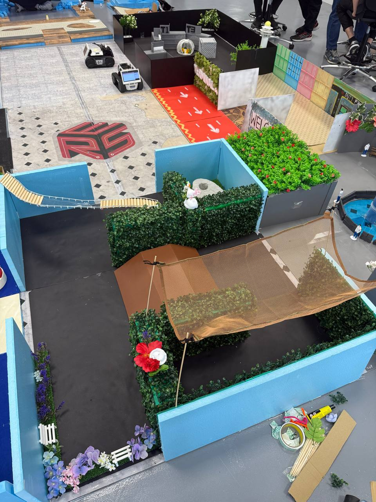

This project involved designing a physical arena inspired by Canopy Park at Jewel Changi Airport, enabling the AgileX LIMO robot to perform localisation, mapping, navigation, and obstacle avoidance.
Arena Showcase

Project Demonstration Video
Project Details
Theme: Jewel Changi Airport Canopy Park
Robot Platform: AgileX LIMO 4-Wheeled Mobile Robot